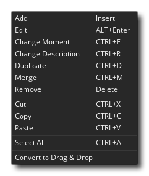
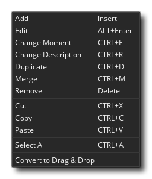

In den meisten Spielen wollen Sie bestimmte Dinge zu bestimmten Zeitpunkten passieren. Jetzt können Sie versuchen, dies zu erreichen, indem Sie die Alarmereignisse verwenden, aber wenn die Dinge zu kompliziert werden, wird dies nicht mehr funktionieren, zumal Sie auf nur zwölf Alarme beschränkt sind. Deshalb haben wir die Timeline-Ressource. In einer Zeitleiste legen Sie fest, welche Aktionen in bestimmten Momenten der Spielzeit ausgeführt werden sollen, und Sie können alle Aktionen verwenden, die auch für ein Objekt in seinen verschiedenen Ereignissen oder Code verfügbar sind, um dies zu definieren. Nachdem Sie eine Zeitlinie erstellt haben, können Sie sie einem Objekt zuweisen. Die Instanz dieses Objekts führt dann die Aktionen zu den angegebenen Zeitpunkten aus, wenn sie in einem Raum platziert oder erstellt werden.
In den meisten Spielen wollen Sie bestimmte Dinge zu bestimmten Zeitpunkten passieren. Jetzt können Sie versuchen, dies zu erreichen, indem Sie die Alarmereignisse verwenden, aber wenn die Dinge zu kompliziert werden, wird dies nicht mehr funktionieren, zumal Sie auf nur zwölf Alarme beschränkt sind. Deshalb haben wir die Timeline-Ressource. In einer Zeitleiste legen Sie fest, welche Aktionen in bestimmten Momenten der Spielzeit ausgeführt werden sollen, und Sie können alle Aktionen verwenden, die auch für ein Objekt in seinen verschiedenen Ereignissen oder Code verfügbar sind, um dies zu definieren. Nachdem Sie eine Zeitlinie erstellt haben, können Sie sie einem Objekt zuweisen. Die Instanz dieses Objekts führt dann die Aktionen zu den angegebenen Zeitpunkten aus, wenn sie in einem Raum platziert oder erstellt werden.
Angenommen, Sie möchten eine Wache erstellen und diese Wache sollte 20 Zeitschritte nach links, dann 10 nach oben, dann 20 nach rechts, dann 10 nach unten und dann schließlich anhalten. Um dies zu erreichen, können Sie eine Zeitlinie erstellen, in der Sie mit der Einstellung einer Bewegung nach links beginnen. Sie würden dann Moment 20 (ein "Moment" ist nur eine andere Art, "Spielschritt" zu sagen) erstellen und eine Bewegung nach oben setzen, dann im Moment 30 eine Bewegung nach rechts, im Moment 50 eine Bewegung nach unten und schließlich im Moment 60 Sie würde die Bewegung stoppen. Sobald dies erledigt ist, kannst du diese Zeitlinie dem Wächter zuweisen und der Wächter wird genau das tun, was du geplant hast. Sie könnten sogar einen Alarm in der Zeitlinie setzen, so dass er nach einer gewissen Zeit wiederholt wird und auf diese Weise Ihre Wache in einem Gebiet patrouillieren kann. Sie können auch eine Zeitlinie verwenden, um Ihr Spiel globaler zu steuern, z. B. indem Sie ein unsichtbares Controller-Objekt erstellen und dann eine Zeitleiste, die in bestimmten Momenten Feinde erzeugt und diese dem Controller-Objekt zuweist und eine Instanz in den Raum legt. Dies ist eine einfache Möglichkeit, zeitgesteuerte Spawns der Feinde zu erhalten.
Um eine Zeitlinie zu erstellen, klicken Sie mit der rechten Maustaste  auf der Timeline-Ressource im Ressourcenbaum und wählen Sie "Erstellen". Dies öffnet das Fenster oben auf dieser Seite mit den folgenden Abschnitten:
auf der Timeline-Ressource im Ressourcenbaum und wählen Sie "Erstellen". Dies öffnet das Fenster oben auf dieser Seite mit den folgenden Abschnitten:
Hier geben Sie Ihrer Timeline-Ressource einen Namen. Dieser darf nur alphanumerische Zeichen oder den Unterstrich "_" enthalten und muss eindeutig sein, da er verwendet wird, um die Zeitleiste über Code zu referenzieren. Dieser Name ist auch die eindeutige Timeline-ID, die in DnD™ -Aktionen oder Code-Funktionen zur Identifizierung der Zeitleiste verwendet werden kann.
Sie können den Momentwert hier einstellen. Der Momentwert wird als die Anzahl der Spielschritte nach dem Start der Zeitleiste berechnet. Wenn Sie also eine Zeitleiste mit Momenten bei 0 und 60 haben, wird Moment 0 ausgelöst, wenn die Zeitleiste gestartet wird, und Moment 60 wird 60 Schritte später passieren. Wenn Ihre Zimmergeschwindigkeit ebenfalls auf 60 eingestellt ist, wird Moment 60 eine Sekunde nach Beginn der Zeitleiste ausgelöst. Sie können einen Doppelklick ausführen
auf den Moment Wert oder Sie können den rechten Knopf benutzen
Menü und wählen Sie "Ändern" (siehe Abschnitt über das Tastenmenü unten), um es zu ändern. Um einen neuen Moment hinzuzufügen, klicken Sie einfach auf die Schaltfläche Hinzufügen am unteren Rand des Editors. Das Hinzufügen neuer Momente öffnet dann den Code- oder Aktionseditor, in dem Sie die Funktionen oder DnD™ hinzufügen können, die Sie in diesem Moment aufrufen möchten.
Um Ihnen zu helfen, zu verstehen, was Ihre Timeline Timeline im Glossar erklärt tut, ist es erlaubt, dass Sie Momenten einen Namen geben, um sie zu identifizieren. Dies ist einfach eine Zeichenfolge und wird nicht im Spielecode oder sonstwo verwendet, da es lediglich dazu dient, zu organisieren und zu verstehen, was Ihre Timeline tut. Sie können einen Doppelklick ausführen
Der Zeitachseneditor erlaubt Ihnen zu verwenden  +
+  Wähle alle Momente zwischen dem ersten Klick aus
Wähle alle Momente zwischen dem ersten Klick aus  und der zweite Klick
und der zweite Klick  oder Sie können verwenden
oder Sie können verwenden  /
/  +
+  Klicken Sie auf einzelne Momente, um sie unabhängig voneinander auszuwählen. Timeline-Momente können mit der rechten Maustaste bearbeitet werden
Klicken Sie auf einzelne Momente, um sie unabhängig voneinander auszuwählen. Timeline-Momente können mit der rechten Maustaste bearbeitet werden  Menü auf einem der ausgewählten Elemente: 
Menü auf einem der ausgewählten Elemente: 
Mit dieser Option können Sie der Timeline einen neuen Moment hinzufügen. Es wird direkt nach dem letzten Moment hinzugefügt. Wenn der letzte Moment in Ihrer Zeitleiste 120 ist, wird der nächste Punkt 121 sein. Sie können die momentane Position durch Doppelklick ändern
Dies öffnet den aktuellen Timeline-Moment für die Bearbeitung.
Ändern Sie den Wert für den ausgewählten Zeitachsenmoment. Dies ist das gleiche wie langsames Doppelklicken
Ändern Sie den beschreibenden Namen für den ausgewählten Zeitachsenmoment. Dies ist das gleiche wie langsames Doppelklicken
Dadurch werden alle ausgewählten Zeitachsenmomente dupliziert und am Ende der aktuellen Zeitleiste fortlaufend hinzugefügt.
Wenn Sie zwei oder mehr Momente aus einer Zeitleiste auswählen, können Sie sie zusammenführen. Dies erzeugt einen einzigen Zeitachsenmoment an der Position des ersten ausgewählten Moments mit dem gesamten Code und den Aktionen gleichzeitig.
Dadurch wird der ausgewählte Moment (oder die ausgewählten Momente) aus der Zeitleiste entfernt.
Mit diesen Optionen können Sie einen oder mehrere Timeline-Momente ausschneiden, kopieren oder einfügen. Sie können hier auch die Standardtastenkombinationen verwenden:
/
+ X,
Mit dieser Option können Sie alle Momente in einer Zeitleiste auswählen. Ausgewählte Momente können dann entfernt, zusammengeführt, dupliziert, ausgeschnitten oder kopiert werden.
Zeitachsenmomente werden mit der beim Erstellen des Projekts ausgewählten Methode erstellt, entweder mithilfe von Code oder mithilfe von Drag & Drop-Aktionen. Mit dieser Option können Sie unabhängig vom Projekttyp von einem zum anderen konvertieren.